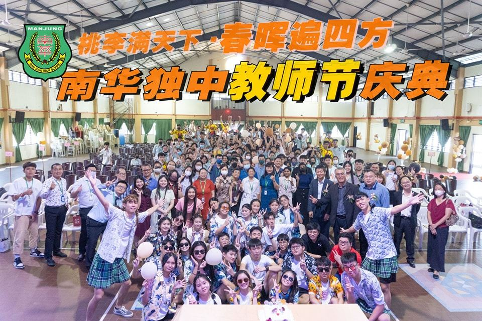
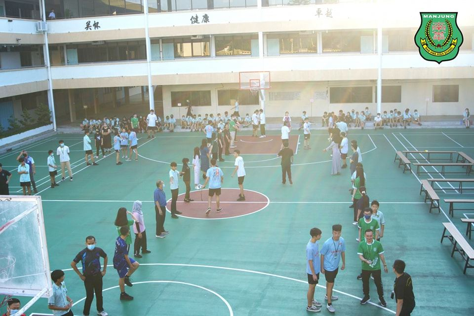
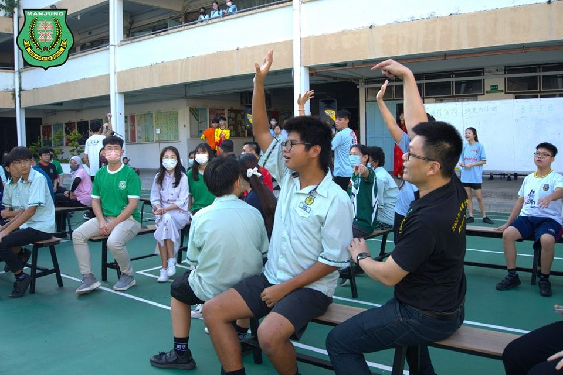
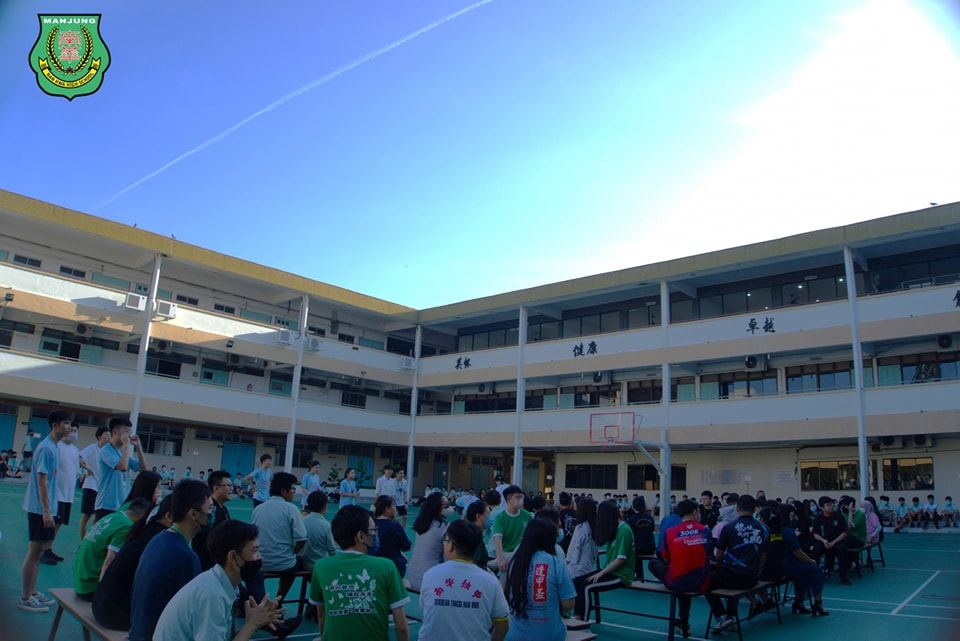
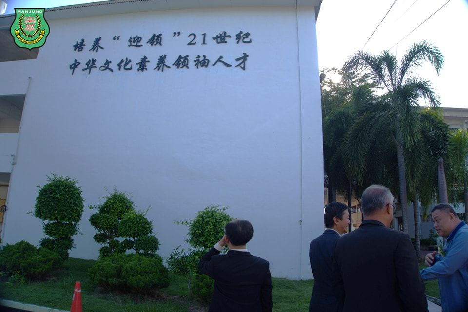
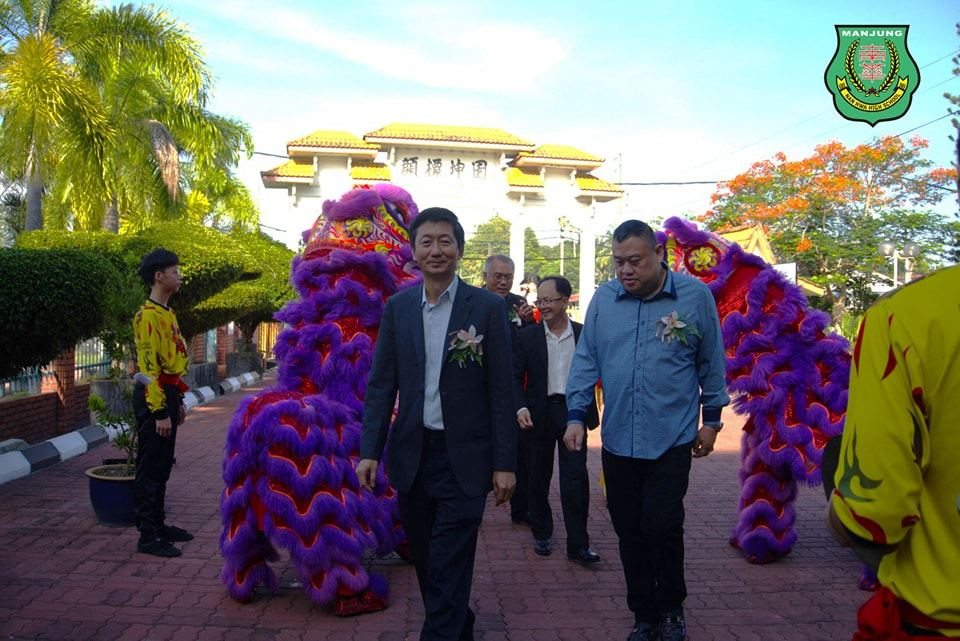
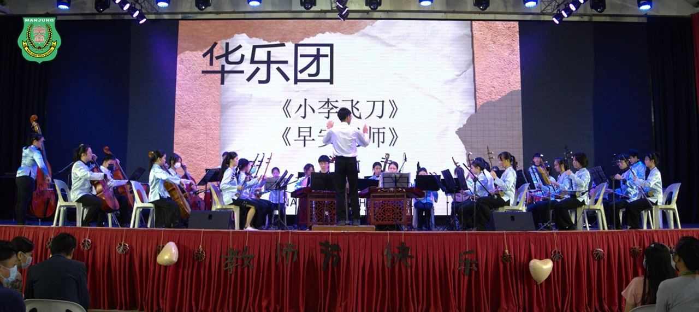

南华独中教师节庆典
南华独中教师节庆典
董事长颜登逸先生宣布
教师调薪至3100令吉
南华独中董事长颜登逸先生于教师节庆典上为老师们捎来好消息，宣布由即日起每位老师的月薪一律调升300令吉，调涨至3100令吉，感谢老师们精神与行动上始终支持南华独中进行教育改革。
由高三筹委会所筹办的教师节庆典主题为“花园晴耕，恩师施恩”将老师喻为辛勤付出的园丁，始终无怨无悔地牺牲奉献，最终遍地开花，特此铭谢恩师的恩惠，并牢记要懂得回报老师的恩情。
南华独中董事长颜登逸先生表示“百年大计，教育为本；教育大计，教师为本”强调教育对社会发展有着极其重大的意义，而全国各所独立中学作为教育生态中特殊的一环，却有着很大的自主权，真正能够做到因校而异，各自发展出极具特色的校订课程，在马来西亚教育改革的路上形成百花齐放之势。颜董事长认为南华独中胸怀大格局的视野已然走出自己的特色，秉持着“培养‘迎领’21世纪中华文化素养领袖人才”的办学愿景，无论是硬体设备和课程都在这两年里得到很大程度的革新。改革必然会为老师们带来繁重的工作量，欣慰的是老师不畏辛劳，肩负扛起教育的大旗，为此颜董事长宣布由即日起，凡具备教师专业文凭的老师将调薪至3100令吉。
南华独中校长陈丽冰博士在致辞中援引柏拉图“钻出洞穴”勉励老师要勇于踏出舒适圈，因为教育的本质就是进行不断的挑战，“老师们，你们要勇于相信自己，潜能在经历困难与挑战，乃至挫折的时候，才能得到极大的激发和释放”。家联主席叶燕妮女士则向老师们献上真诚的祝福及致以崇高的敬意，感谢老师们为孩子们的成长和未来付出的辛勤努力。
当天出席者包括有董事长颜登逸先生、副董事长拿督叶绍利、总务何添胜董事、副总务林道祥董事、家联主席叶燕妮女士及理事陈惠芝女士。
＃教师节庆典 #花园晴耕 #恩师施恩
＃南华独中 ＃曼绒 ＃实兆远






